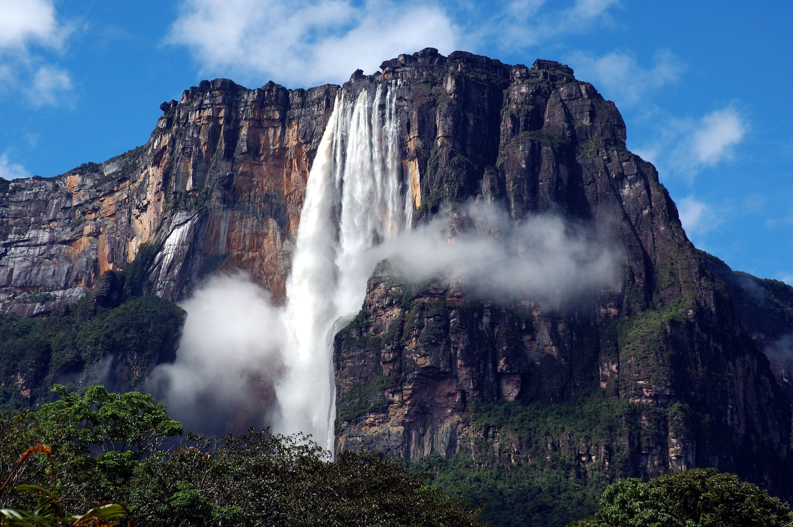
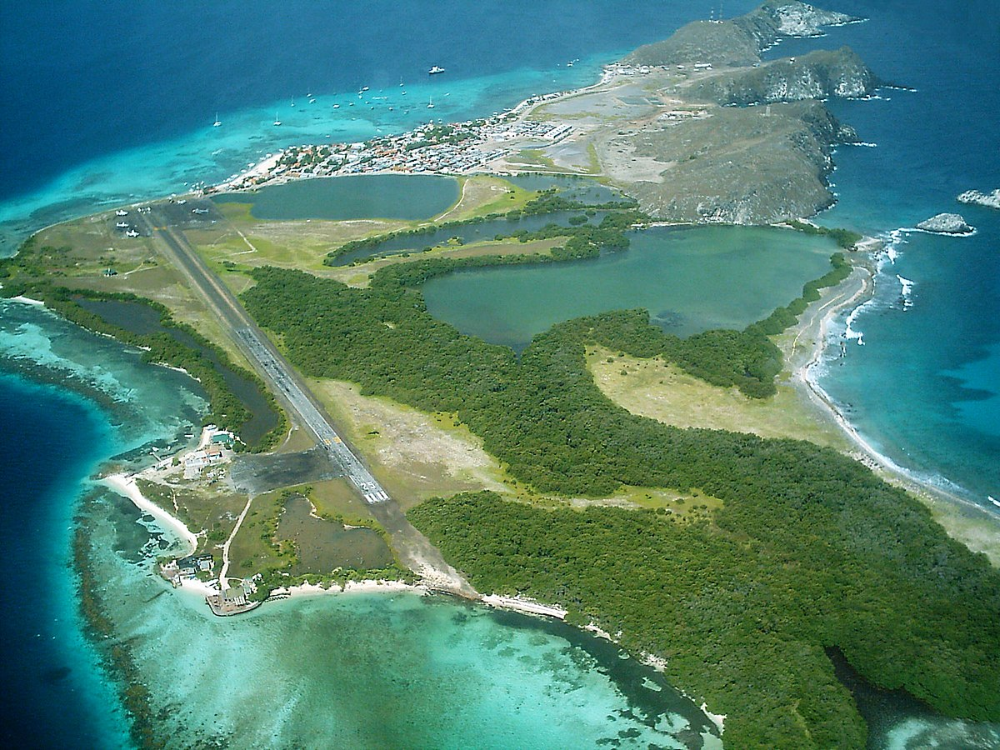
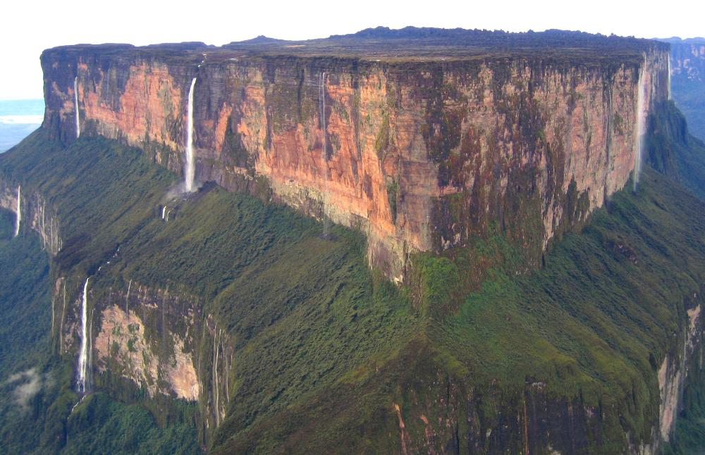

1. Salto Ángel (Bolívar)
El símbolo del turismo en Venezuela: patrimonio mundial de la humanidad, récord Guinnes por el salto de agua mas alta del mundo (979 metros),este gran destino ubicado dentro del Parque Nacional Canaima es uno de los lugares de Venezuela que sirvió de inspiración para numerosos libros y películas como “UP”. Ubicado en medio de la selva, los chorros de agua del Salto Angel caen desde lo alto del Auyantepui, uno de los numeros tepuyes del Parque Nacional Canaima. ¿Algo que hace aún más increíble este lugar? El descubrimiento reciente (2013) de la cueva de cuarcita más grande del mundo, en las profundidades de una de las grietas del tepuy.
2. Los Roques (Dependencias Federales)
Los Roques ofrece las playas más paradisíacas del Caribe, de aguas turquesa y arena blanca y con una diversidad marina increíble, ideales para viajar y practicar el buceo. Además de su belleza, el Parque Nacional Los Roques es un archipiélago de numerosas islas y es considerado el parque marino más grande del Caribe con arrecifes de coral casi vírgenes y un mar tranquilo y cálido, lo que lo hacen sin duda un excelente destino que visitar en Venezuela.
3. Roraima (Ciudad Guayana)
Además del Parque Nacional Canaima, el segundo destino selvático de este listado es el Roraima, ubicado en el estado Bolívar, cerca de la frontera con Brasil. Destino mochilero por excelencia, el Roraima es una formación geológica de 2810 metros de altura, siendo el sueño de la mayoría de los que les encanta viajar con con una mochila en el hombro. Otro dato interesante es que fue inspiración para la novela “El mundo perdido” de Arthur Conan.